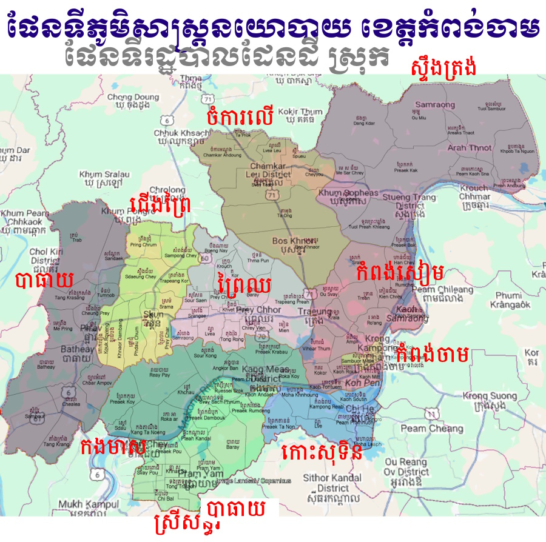
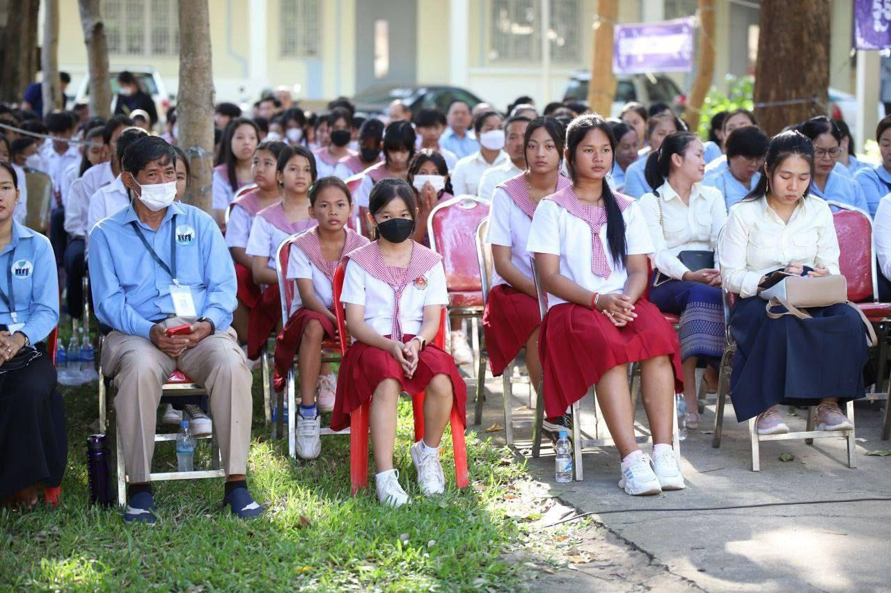
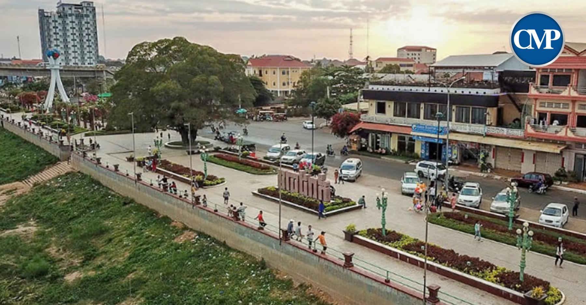
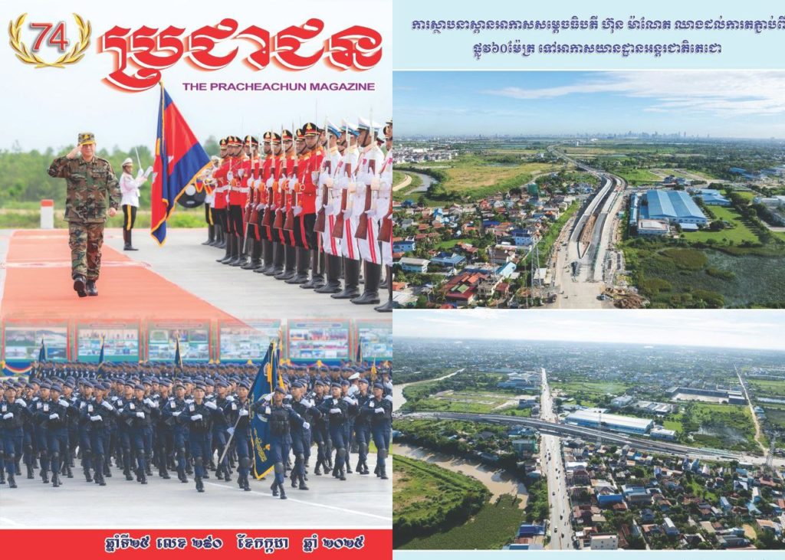

សូមស្វាគមន៍មកកកាន់
ខេត្តកំពង់ចាម
ខាងក្រោមនេះអ្នកនឹងអាចយល់ដឹងអំពីព័ត៌មានក្នុងខេត្តកំពង់ចាម
មាតិការ
១.ប្រវតិ្តខេត្តកំពង់ចាម....................................................................................។
២.ទីតាំងភូមិសាស្ត្រ.........................................................................................។
៣.ប្រជាជន និងវប្បធម៌..................................................................................។
៤.ស្ថាបត្យកម្ម និងសំណង់សំខាន់ៗ................................................................។
៥.ការអប់រំ និងស្ថាប័នសិក្សា...........................................................................។
៦.សេដ្ឋកិច្ច........................................................................................................។
៧.ទេសចរណ៍...................................................................................................។
៨.ការអភិវឌ្ឍនាអនាគត..................................................................................។
ប្រវតិ្តខេត្តកំពង់ចាម
មាតិកាខេត្ត កំពង់ចាម មានប្រវត្តិសាស្ត្រយូរអង្វែង ហើយធ្លាប់ជាតំបន់សំខាន់ក្នុងអាណាចក្រខ្មែរ។ នៅសម័យអង្គរ តំបន់នេះជាគន្លងដឹកជញ្ជូន និងពាណិជ្ជកម្មតាមទន្លេមេគង្គ ដែលភ្ជាប់កម្ពុជា ជាមួយតំបន់ជិតខាង។ កំពង់ចាមក៏ជាកន្លែងសម្បូរទៅដោយវប្បធម៌ និងសាសនា ពោរពេញដោយវត្តអារាម ប្រាសាទ និងសំណង់បុរាណជាច្រើន។ នៅសម័យអាណានិគមបារាំង ខេត្តនេះក្លាយជាមជ្ឈមណ្ឌលពាណិជ្ជកម្ម និងការដឹកជញ្ជូនតាមទន្លេ ដោយពិសេសការនាំចេញកៅស៊ូ និងកសិផលផ្សេងៗ។ ប្រវត្តិនេះបានបង្ហាញថា កំពង់ចាមជាខេត្តដែលមានតួនាទីសំខាន់ក្នុងសេដ្ឋកិច្ច វប្បធម៌ និងសង្គមរបស់កម្ពុជា។
ទីតាំងភូមិសាស្ត្រ
មាតិកាខេត្ត កំពង់ចាម ស្ថិតនៅភាគកណ្ដាលនៃប្រទេសកម្ពុជា ហើយមានទីតាំងសំខាន់តាមបណ្ដោយទន្លេមេគង្គ។ ខេត្តនេះមានព្រំប្រទល់ជាប់នឹងខេត្ត កំពង់ធំ និង កំពង់ចាន ខាងលិច, ក្រចេះ ខាងជើង, ព្រៃវែង និង ត្បូងឃ្មុំ ខាងកើត, និង កណ្តាល ខាងត្បូង។ ទីរួមខេត្តគឺក្រុង កំពង់ចាម ដែលស្ថិតនៅលើច្រាំងទន្លេមេគង្គ មានទីតាំងងាយស្រួលក្នុងការដឹកជញ្ជូនទំនិញ និងធ្វើពាណិជ្ជកម្ម។ ភូមិសាស្ត្រនេះរួមមានដីស្រែទន្លេ សួនច្បារ និងតំបន់ភ្នំតូចៗ ដែលអាចអភិវឌ្ឍសម្រាប់កសិកម្ម និងទេសចរណ៍។
ប្រជាជន និងវប្បធម៌
មាតិកាខេត្ត កំពង់ចាម មានប្រជាជនរស់នៅច្រើនលើសពី ជាង១លាននាក់ ដែលភាគច្រើនជាជនជាតិខ្មែរ និងជាពុទ្ធសាសនិក។ ក្រៅពីនេះ ក៏មានជនជាតិភាគតិចដូចជា ចាម (ជនជាតិម៉ូស្លីម), វៀតណាម និងចិន ដែលរស់នៅរួមគ្នា បង្កើតឱ្យខេត្តមានវប្បធម៌ចម្រុះ។ ជនជាតិចាមមានប្រពៃណី និងទំនៀមទម្លាប់ផ្ទាល់ខ្លួន ដូចជា អាហារ វាយនភណ្ឌ និងសាសនាអ៊ីស្លាម ដែលធ្វើឱ្យកំពង់ចាមកាន់តែមានពិសេស។ ពិធីបុណ្យប្រពៃណីខ្មែរ និងអ៊ីស្លាមតែងតែប្រារព្ធឡើងស្របគ្នា បង្ហាញពីការរស់នៅសន្តិសុខ និងអន្តរសាសន៍ក្នុងតំបន់។ វប្បធម៌នេះបានក្លាយជាមូលដ្ឋានដ៏សំខាន់ក្នុងការរស់នៅរបស់ប្រជាជន និងទាក់ទាញភ្ញៀវទេសចរ។
ស្ថាបត្យកម្ម និងសំណង់សំខាន់ៗ
មាតិកាខេត្ត កំពង់ចាម មានសំណង់ស្ថាបត្យកម្មចម្រុះ ដែលបង្ហាញពីប្រវត្តិសាស្ត្រ និងវប្បធម៌ជាតិ។ នៅទីរួមខេត្តមាន ស្ពានកំពង់ចាម ដែលត្រូវបានសាងសង់តាំងពីសម័យអាណានិគមបារាំង និងក្លាយជានិមិត្តសញ្ញាសំខាន់មួយ។ ក្រៅពីនេះ មាន វត្តអារាមបុរាណ, ប្រាសាទតូចៗ និងសំណង់សាសនាអ៊ីស្លាម ដូចជា មសជិតចាម ដែលបង្ហាញពីវប្បធម៌ចម្រុះក្នុងខេត្ត។ ខេត្តកំពង់ចាមក៏មានអគាររដ្ឋបាល និងទីផ្សារប្រពៃណី ដែលតំណាងឱ្យសេដ្ឋកិច្ចនិងសង្គមក្នុងតំបន់។ សំណង់ទាំងនេះបានធ្វើឱ្យកំពង់ចាមក្លាយជាតំបន់ទាក់ទាញទេសចរណ៍ និងមានតម្លៃប្រវត្តិសាស្ត្រខ្ពស់។
ការអប់រំ និងស្ថាប័នសិក្សា
មាតិកាខេត្ត កំពង់ចាម មានប្រព័ន្ធអប់រំចម្រុះចាប់ពីបឋមសិក្សា ដល់វិទ្យាល័យ និងសាកលវិទ្យាល័យ។ នៅក្នុងខេត្តមានសាលារៀនសាធារណៈ និងឯកជនជាច្រើន ដែលផ្តល់ឱកាសសិក្សារសម្រាប់កុមារ និងយុវជន។ សាកលវិទ្យាល័យ និងវិទ្យាស្ថានបណ្តុះបណ្តាលវិជ្ជាជីវៈ ផ្តោតលើការបង្រៀនជំនាញដូចជា កសិកម្ម, ពាណិជ្ជកម្ម, វិទ្យាសាស្ត្រ និងបច្ចេកទេស។ ជនជាតិចាមក៏មានសាលាសាសនាអ៊ីស្លាម និងមជ្ឈមណ្ឌលបណ្តុះបណ្តាលផ្ទាល់ខ្លួន ដែលជួយរក្សាវប្បធម៌ និងសាសនារបស់ពួកគេ។ ការគាំទ្រពីរដ្ឋ និងអង្គការមិនមែនរដ្ឋាភិបាល (NGOs) ក៏ជួយលើកកម្ពស់គុណភាពអប់រំ ដើម្បីបង្កើតកម្លាំងពលកម្មមានជំនាញសម្រាប់អនាគត។
សេដ្ឋកិច្ច
មាតិកាសេដ្ឋកិច្ចខេត្ត កំពង់ចាម ផ្អែកលើវិស័យ កសិកម្ម ពាណិជ្ជកម្ម និងឧស្សាហកម្មតូចៗ។ កសិកម្មជាមូលដ្ឋានសំខាន់ ដោយមានការដាំដុះ ស្រូវ កៅស៊ូ ម្រេច និងដំណាំស្រូវប្រេង ដែលផ្គត់ផ្គង់ទាំងក្នុងប្រទេស និងនាំចេញក្រៅប្រទេស។ ទន្លេមេគង្គក៏ជាដែនដីសម្បូរទៅដោយ នេសាទ ដែលជួយបង្កើតចំណូលសម្រាប់ប្រជាជនមូលដ្ឋាន។ ពាណិជ្ជកម្មតាមទន្លេ និងផ្លូវគោកមានសារៈសំខាន់ក្នុងការភ្ជាប់ទីផ្សារជាមួយភ្នំពេញ និងខេត្តជិតខាង។ ខេត្តកំពង់ចាមក៏មានរោងចក្រ និងសហគ្រាសឯកជនច្រើន ដែលផលិតទំនិញសម្រាប់ទីផ្សារក្នុងស្រុក និងការនាំចេញ។ ដោយសារតែទីតាំងស្ថិតនៅតាមបណ្តោយទន្លេមេគង្គ វាជួយឲ្យសេដ្ឋកិច្ចក្នុងខេត្តនេះមានសក្តានុពលចម្រើនកាន់តែខ្ពស់។
ទេសចរណ៍
មាតិកាខេត្ត កំពង់ចាម ជាតំបន់មានទេសភាពស្រស់ស្អាត និងកន្លែងទេសចរណ៍ពោរពេញទៅដោយទំនៀមទម្លាប់វប្បធម៌ និងធម្មជាតិ។ ភ្ញៀវអាចទស្សនា ទន្លេមេគង្គ ដែលឆ្លងកាត់ខេត្ត ដោយផ្តល់ឱកាសធ្វើទូកកម្សាន្ត និងសាកសមជាមួយជីវិតជនបទ។ មានកន្លែងល្បីដូចជា ស្ពានកំពង់ចាម, វត្តអារាមបុរាណ, និង មសជិតចាម ដែលបង្ហាញពីភាពចម្រុះវប្បធម៌។ ទេសចរណ៍ធម្មជាតិក៏មានដូចជា ភ្នំ បឹង និងសួនច្បារ ដែលផ្តល់ភាពស្រស់ស្រាយសម្រាប់ភ្ញៀវទេសចរ។ ពិសេស ភ្ញៀវអាចរីករាយនឹង អាហារប្រពៃណី និងផលិតផលស្រុក ដូចជា ត្រីទន្លេ និងមីចាម ដែលធ្វើឱ្យទស្សនាការកាន់តែមានអត្ថន័យ។
ការអភិវឌ្ឍនាអនាគត
មាតិកាខេត្ត កំពង់ចាម មានគម្រោងអភិវឌ្ឍន៍អនាគតផ្តោតលើ កសិកម្មទំនើប, ឧស្សាហកម្ម និងទេសចរណ៍។ រដ្ឋាភិបាលមានយុទ្ធសាស្ត្រកែលម្អបណ្ដាញផ្លូវគោក និងស្ពាន ដើម្បីភ្ជាប់ទីរួមខេត្តជាមួយតំបន់ជិតខាង និងទីផ្សារធំៗ។ ការវិនិយោគលើ កៅស៊ូ, ម្រេច និងដំណាំកសិកម្មដទៃទៀត កំពុងត្រូវបានលើកស្ទួយ ដើម្បីបង្កើនការនាំចេញ។ ខេត្តក៏មានសក្តានុពលអភិវឌ្ឍ ទេសចរណ៍វប្បធម៌ និងធម្មជាតិ ដោយផ្តោតលើការអភិរក្សបរិស្ថាន និងកន្លែងប្រវត្តិសាស្ត្រ។ ការទាក់ទាញវិនិយោគឯកជន និងបរទេស គឺជាគន្លឹះសំខាន់សម្រាប់បង្កើនសេដ្ឋកិច្ច និងបង្កើតឱកាសការងារថ្មីៗឱ្យប្រជាពលរដ្ឋ។
